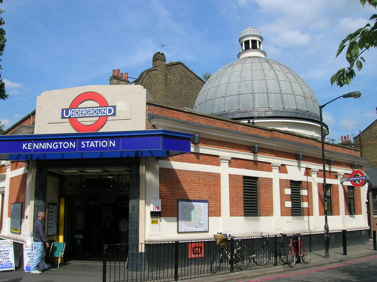

Personal Details
Name: Hasan Ali
Date of Birth: 20th September 2001
Occupation: Student (Masters in Global Health Management at Imperial College London) and part-time Patient Healthcare Navigator
Previous Education: BSc in Cancer Biomedical Sciences from UCL (First Class Honours)
Location: Kennington, London
Hajj: Hasan has completed Hajj.
Driving: Hasan is a licensed driver.

Family
Hasan lives with his mom and dad in Kennington, London. He has two younger full siblings, a brother and a sister, and two older half-siblings, also a brother and a sister. Hasan comes from a lovely, caring, and religious family.
Younger Brother: Completing his MEng in Imperial College London.
Younger Sister: Currently in boarding school.
Hobbies and Interests
Hasan loves football and regularly goes to the gym. He has a keen interest in biology and dreams of becoming a successful businessman. He is also known for handling spicy food very well.
Future Goals
After completing his master's, Hasan aims to land a job and gain experience before getting married. He aspires to work in healthcare technology and eventually become a businessman. Hasan also plans to perform Umrah with his friends.